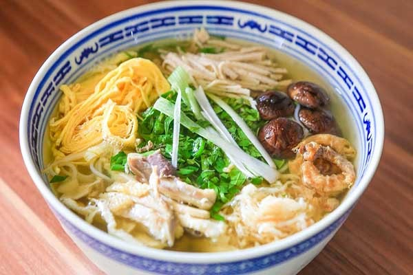
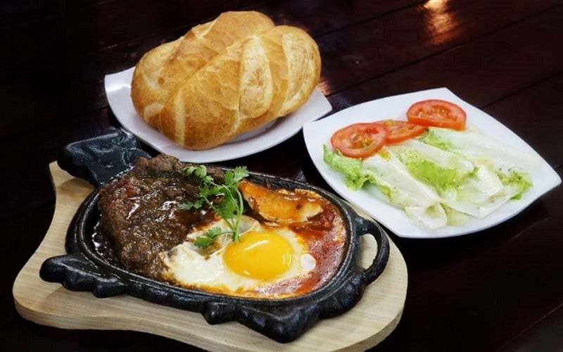
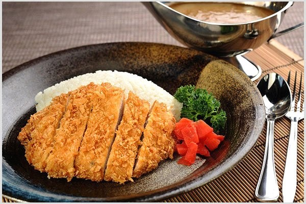
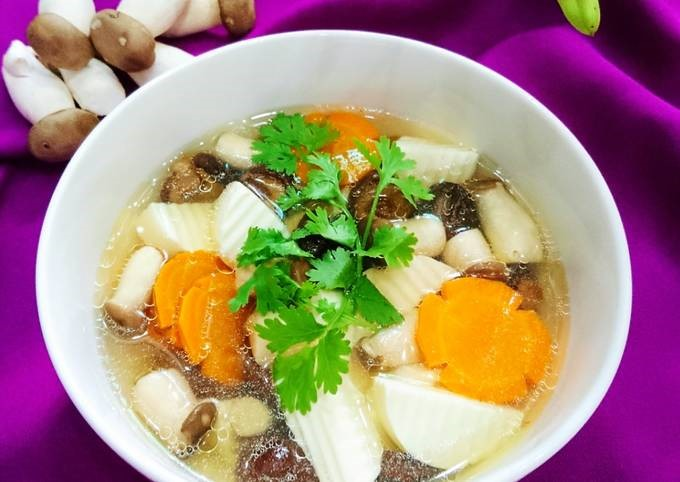
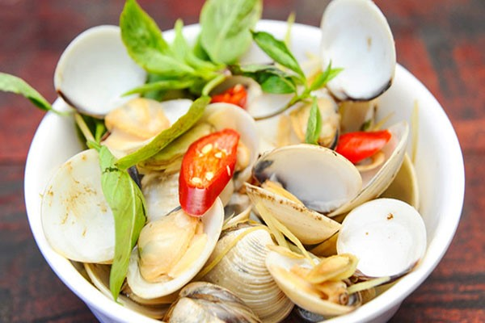
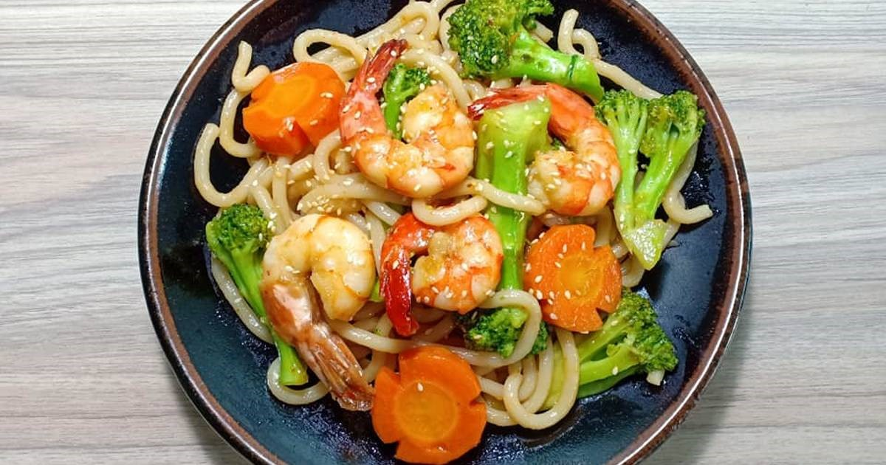

Điểm của bạn là
Bạn đã trả lời đúng câu hỏi
Đóng
Nói đến văn hóa ẩm thực Hà Nội, không thể không nhắc đến món “Bún Thang” - một hương vị ẩm thực thanh tao, tinh tế như chính bản tính nhẹ nhàng, lịch lãm của người Hà Thành.
Chuẩn bị: 20 phút
Thực hiện: 30 phút
Khẩu phần: 6 người
Nguyên Liệu
• Thịt lườn gà: 300g
• Xương ống: 500g
• Tôm khô nhỏ: 50g
• Tôm khô nõn loại ngon: 100g
• Giò lụa: 200g
• Trứng vịt: 2 quả
• Nấm hương: 50g
• Củ cải khô: 50g
• Giấm trắng: 200ml
• Tỏi: 100g
• Rau răm, ớt, chanh, mắm tôm, hạt nêm Knorr, một ít rượu trắng
• Bún rối nhỏ: 1kg
Cách nấu
• Thịt gà luộc chín, xé sợi.
• Giò lụa xắt sợi.
• Trứng đánh rối cùng một chút hạt nêm Knorr và 1 muỗng canh rượu trắng, tráng mỏng, cắt sợi.
• Tôm khô nõn ngâm mềm, giã hoặc xay nhuyễn làm ruốc tôm.
• Nấm hương ngâm nước lạnh cho mềm, cắt bỏ cuống.
• Củ cải khô ngâm nước ấm, xả sạch, ướp với một chút hạt nêm, cho chút dầu ăn phi tỏi cho thơm rồi cho củ cải vào xào sơ.
• Nấu nước dùng: Xương ống heo trụng nước sôi sau đó thả vào nồi nước lạnh hầm trong vòng 2 giờ cho ra nước ngọt. Cho phần tôm khô nhỏ vào hầm chung. Khi hầm xương gần được, cho nấm hương vào. Nêm hạt nêm cho vừa ăn.
• Tỏi lột vỏ, xắt mỏng ngâm với giấm khoảng 1 giờ.
• Lấy một lượng bún vừa đủ vào tô, sắp lên mặt bún thịt gà, giò, trứng, củ cải, ruốc tôm sau đó chan nước lèo, rắc rau răm lên mặt. Ăn nóng, nêm thêm mắm tôm, chanh, ớt, tỏi ngâm tùy ý.
Loại bánh này phù hợp để dùng đầu tiên trong bữa tiệc tối hoặc là món khai vị tại một bữa tiệc cocktail. Sự kết hợp của các nguyên liệu phương Đông và phương Tây tạo nên hương vị hấp dẫn cho món ăn. Món ăn này sẽ ngon hơn nếu bạn chọn được phần thịt bò ngon nhất.
Chuẩn bị: 10 phút
Thực hiện: 5 phút
Khẩu phần: 6-8 người
Nguyên Liệu
• 0.5 kg thịt sườn bò phi lê, dày khoảng 2.5 cm, lọc bỏ mỡ
• 1 tép tỏi, nghiền nát
• 1 muỗng canh bơ, làm tan chảy
• 1/2 muỗng canh nước mắm
• 1/2 muỗng canh nước tương
• 1 muỗng canh nước
• 1 muỗng cà phê hạt nêm Knorr
• 1 muỗng canh bơ
• Hành tím xắt lát mỏng ngâm trong hỗn hợp đường, muối & giấm
• 1 bánh mỳ Pháp, cắt thành lát 1.5 cm
Cách nấu
• Chuẩn bị hỗn hợp ướp: khuấy đều tỏi, 1 muỗng canh bơ, nước mắm, nước tương, nước, và hạt nêm Knorr cho đến khi hỗn hợp được trộn đều.
• Trộn thịt và hỗn hợp ướp, để trong ít nhất 1 giờ.
• Đun chảy 1 muỗng canh bơ còn lại trên chảo, mở lửa lớn. Cho thịt bò vào áp chảo từ 2 đến 3 phút cho mỗi bên. Lấy miếng thịt ra khỏi chảo để nguội bớt trong khoảng 5 phút.
• Trong lúc đó, nướng các lát bánh mỳ Pháp.
• Cắt mỏng miếng bít tết theo độ dày mong muốn. Dùng với bánh mỳ và hành muối.
Món “Sườn cốt lết” này cũng tương tự như món tonkatsu của Nhật, được ướp, tẩm bằng bột chiên xù, và rán cho tới khi nâu vàng. Món ăn này thường được dùng với cơm, dưa muối, và nước sốt mận ngọt.
Chuẩn bị: 15 phút
Thực hiện: 15 phút
Khẩu phần: 4 người
Nguyên Liệu
• 4 miếng cốt lết heo không xương, không dày quá 1.8 cm
• Hạt tiêu đen, đã xay
• 1 muỗng canh rượu gạo
• 1 muỗng canh tương
• 1/2 muỗng canh Hạt nêm Knorr
• 1/2 chén bột năng
• 2 quả trứng, đánh tan
• 1 chén bột chiên xù
• Dầu thực vật để chiên
• 1 tép tỏi, nghiền nát
Cách nấu
• Hỗn hợp ướp: Khuấy đều tỏi, rượu gạo, nước tương, Hạt nêm Knorr cho đến khi hỗn hợp được trộn đều.
• Nêm thịt heo cốt lết với hạt tiêu đen xay. Cho thịt heo vào bát nhựa cùng hỗn hợp ướp sao cho miếng cốt lết được phủ đều sốt.
• Cho vào tủ lạnh trong ít nhất 1 giờ để ướp.
• Lắc cốt lết heo để loại bỏ sốt thừa. Lăn cốt lết qua bột năng, sau đó là trứng, rồi bột chiên xù.
• Trong một chảo sâu lòng, đổ dầu đủ để ngập khoảng 2.5 cm lòng chảo. Khi dầu được làm nóng đến 180°C, chiên sườn cốt lết đến khi vàng nâu, trở mặt cho chín vàng 2 bên. Thịt chín vớt ra thấm ráo dầu. Ăn cùng với cơm gạo hương lài.
Đây là món canh không béo nhưng vẫn thịnh soạn. Vị ngọt của nấm, vị cay của tỏi và tiêu, vị chua của giấm, và vị bùi của trứng cùng hành lá tạo nên sự cân bằng tuyệt vời, kết hợp các hương vị riêng biệt thành một món canh ngon.
Chuẩn bị: 15 phút
Thực hiện: 15 phút
Khẩu phần: 6 người
Nguyên Liệu
• 5 muỗng canh Hạt nêm Knorr
• 5 chén nước
• 2 chén nấm tai mèo tươi, xắt lát mỏng
• 6 cây nấm đông cô, ngâm trong nước nóng, thái mỏng
• 1/2 chén măng tươi thái lát, để ráo nước
• 3 lát gừng tươi
• 2 tép tỏi nghiền nát
• 1 trái ớt chỉ thiên bỏ hạt, thái nhỏ
• 1/2 muỗng cà phê dầu mè
• 1 miếng đậu hũ trắng, cắt mỏng (thành dải dày khoảng 0.6 cm)
• 2 quả trứng gà, đánh tan
• Hạt tiêu đen xay
• 2 muỗng canh nước tương
• 3 muỗng canh giấm gạo hoặc giấm đỏ
• 2 cây hành lá, cắt nhỏ
• 1/4 chén rau mùi cắt nhỏ
Cách nấu
• Cho nước, hạt nêm Knorr, nấm tai mèo, măng, gừng, tỏi, ớt, và một tí nước tương vào chảo. Đun sôi, sau đó tiếp tục đun nhỏ lửa.
• Trộn nước tương, dấm và dầu mè với nhau. Cho đậu hũ vào và đảo để kết hợp với hỗn hợp.
• Đun sôi nước dùng trở lại và cho thêm nấm đông cô, đậu hũ cùng với toàn bộ hỗn hợp ướp vào. Cho trứng vào từ từ và khuấy chậm để tạo sợi vân dài và mỏng. Nêm với tiêu xay.
• Trang trí với hành lá và ngò.
Nghêu tươi được hấp trong nước sốt đầy hương vị từ tỏi, rượu gạo và nước mắm. Húng quế Thái Lan góp thêm hương thơm ngọt ngào cho nghêu, để thưởng thức cùng chén cơm gạo hương lài giản dị.
Chuẩn bị: 15 phút
Thực hiện: 10 phút
Khẩu phần: 4 đến 6 người
Nguyên Liệu
• 1.35kg nghêu còn vỏ, đã cọ sạch
• 1 muỗng canh dầu thực vật
• 4 tép tỏi, băm nhỏ
• 3 quả ớt, cắt đôi theo chiều dọc
• 1/3 chén rượu gạo
• 1 muỗng canh nước mắm
• 1 muỗng cà phê hạt nêm Knorr
• Tiêu đen xay để tạo hương vị
• 1 chén lá húng quế Thái xắt nhỏ
Cách nấu
• Trong một bát nhỏ, trộn đều rượu gạo, nước mắm, và Hạt nêm Knorr.
• Đun nóng dầu trong chảo với nhiệt độ trung bình cao và xào tỏi cho đến khi có mùi thơm. Thêm ớt vào xào trong 10 giây.
• Thêm rượu và hỗn hợp nước mắm, đun sôi.
• Thêm nghêu, đậy nắp nồi, và nấu khoảng 4 đến 6 phút hoặc cho đến khi vỏ nghêu mở.
• Nêm với tiêu đen xay. Thêm lá húng quế, đậy nắp nồi, và nấu khoảng một phút nữa. Bỏ đi những con nghêu chưa mở nắp.
• Ăn với cơm trắng.
Món ăn này làm khá dễ và nhanh. Tôm tươi và bông cải xanh nổi bật hơn trên đĩa mì xào làm từ gạo. Giá đậu góp phần trang trí trên bề mặt, và trứng sẽ làm cho món ăn ngon và đẹp hơn. Một ít nước cốt chanh sẽ làm sợi mỳ sáng, óng ả.
Chuẩn bị: 10 phút
Thực hiện: 20 phút
Khẩu phần: 4 người
Nguyên Liệu
• 1 gói 250g mì sợi gạo, ngâm trong nước nóng
• 4 muỗng canh dầu thực vật
• 250g tôm (loại cỡ trung bình), bóc vỏ, bỏ chỉ lưng
• 1 tép tỏi, băm nhuyễn
• 3 quả trứng
• 6 bông cải xanh, cắt thành miếng khoảng 5cm theo chiều dọc
• 1 chén giá đậu
• 1 muỗng canh nước tương đen
• 1 muỗng canh nước
• 1 muỗng canh Hạt nêm Knorr
• Hạt tiêu trắng xay
• Nước ép từ 1/2 quả chanh
Cách nấu
• Cho mì vào một tô lớn, rồi cho 1/2 muỗng canh dầu ăn vào, trộn đều. Cho vào tủ lạnh giữ lạnh ít nhất 30 phút.
• Trong một bát nhỏ, trộn đều nước tương đen, nước, và Hạt nêm Knorr.
• Làm nóng chảo ở nhiệt độ trung bình cao, dùng 1,5 muỗng dầu ăn còn lại xào tỏi cho đến khi có mùi thơm. Thêm tôm, xào cho đến khi tôm có màu hồng.
• Dùng ngón tay bung các sợi bún ra trước khi thêm bún vào chảo. Thêm hỗn hợp nước tương. Xào cho đến khi mì được trộn đều.
• Thêm cải ngọt vào và tiếp tục xào cho đến khi mềm. Thêm giá đỗ và xào nhanh tay.
• Gạt mì vào thành chảo để có khoảng trống ở giữa chảo. Đập trứng vào khoảng trống ở trung tâm chảo khuấy cho đến khi chín. Trộn tất cả mọi thứ trong chảo lại với nhau. Nêm với hạt tiêu. Trộn với nước cốt chanh trước khi dùng.
Câu hỏi 1: "Bún thang" là món ăn đặc sản ở đâu?
Câu hỏi 2: "Bún thang" là món ăn đặc sản ở đâu?
Câu hỏi 1: "Bún thang" là món ăn đặc sản ở đâu?
Điểm của bạn là
Bạn đã trả lời đúng câu hỏi